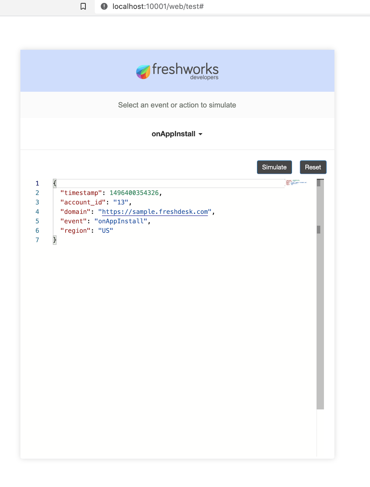

Observing External Events happening outside of your app will enable your app to act by registering a handler JS function. This Handler will be invoked every time a desired event is observed in 3rd party systems.
You will explore this feature by writing some simple code that observes app installation, uninstallation or desired external events are happening. But for the scope of the tutorial we will only simulate all this happening and log information in the terminal.
Let's start learning about app setup and external events by going ahead and downloading sample code. It contains everything you need to just focus on learning by leveraging existing boilerplate code.
Current tutorial is an App running on Freshdesk.
git clone https://github.com/freshworks-developers/app-setup-and-external-events-freshdesk.git
Or you can also
Don't run the code just yet. Let's understand the code that's already existing in your boilerplate. You would notice app/ , config/ folders for an app that's only going to use server/server.js . Unfortunately, it is not advisable to skip app/and config/ folders as CLI may throw errors. This restriction may be removed in the future. So those folders exist to have code just to pass CLI validations.
We will work on server.jsgoing forward.
App setup events let your app execute handlers when the app is either being installed or uninstalled.
Let's go ahead and write app setup events
Open server/server.jsand write
exports = {
events: [
{ event: 'onAppInstall', callback: 'onInstallHandler' },
{ event: 'onAppUninstall', callback: 'onUninstallHandler' }
],
onInstallHandler: function (payload) {
console.info(' Observed on App Install ', payload);
renderData();
},
onUninstallHandler: function (payload) {
console.info('Observed on App Uninstall', payload);
renderData();
}
};
exports will allow your code defined to be available in the scope of the platform.exports is assigned with an object with events and handlers as it's properties.eventskey is associated with an array of objects where each object is an event Name associated with the callback name. In the above example, { event: 'onAppInstall', callback: 'onInstallHandler' } and { event: 'onAppUninstall', callback: 'onUninstallHandler' }payload. An argument passed to the parameter of the handler to let the handler have access to information it may need when the app installs and uninstalls respectively.renderData() platform method that must be used at the end of the handler. This lets the app to either let the installation to proceed or halt to throw an error message if needed.Now that we understand the code here a little bit, let's go ahead and run it
❯ fdk run
Starting local testing server at http://*:10001/
Append 'dev=true' to your Freshdesk account URL to start testing
e.g. https://domain.freshdesk.com/a/tickets/1?dev=true
Quit the server with Control-C.
To simulate product, app setup, and external events, visit - http://localhost:10001/web/test
Notice the button line to test app setup events. Let's go ahead and open the same URL in a Browser.

onAppInstallIn my case, the following is printed to the terminal
Observed on App Install {
timestamp: 1496400354326,
account_id: '13',
domain: 'https://sample.freshdesk.com',
event: 'onAppInstall',
region: 'US',
iparams: {}
}
It is the desired log as defined in the onInstallHandler(){..}
This is the same with onAppUninstall event as well.
Duration : 4
The idea behind external events is to have the app invoke a handler whenever something desired happens in the 3rd party systems. For example, if a payment fails with a payment provider, we can have a ticket created automatically in Freshdesk.
Webhooks are URL endpoints that can help us solve these problems. The 3rd party payments provider performs the payments with a mechanism that whenever the payment fails it makes a HTTP request with POST method to an webhook endpoint which intern invokes the Handler function.
On Freshworks Developer Platform, you will need to
generateTargetUrl() function.Let's see the same by writing some code,
exports = {
events: [
{ event: 'onAppInstall', callback: 'onInstallHandler' },
{ event: 'onAppUninstall', callback: 'onUninstallHandler' },
{ event: 'onExternalEvent', callback: 'onExternalEventHandler' }
],
onInstallHandler: async function (payload) {
try {
const webhook = await generateTargetUrl();
const options = {
body: `{'webhook': ${webhook}}`,
action: 'register'
};
const { response } = await $request.post(thirdPartyEndpoint, options);
console.info('\n Webhook creation successful \n', webhook);
console.info('\n Webhook Registration Successful \n', response);
console.info('\n Hander received following payload when app is installed \n\n', payload);
renderData();
} catch (error) {
console.error('Something went wrong. Webhook Registration has failed');
}
},
onUninstallHandler: async function (payload) {
try {
const options = {
action: 'de-register'
};
const { response } = await $request.post(thirdPartyEndpoint, options);
console.info('\n Webhook De-Registration Successful \n', response);
console.info('\n Hander received following payload when app is uninstalled \n\n', payload);
} catch (error) {
console.error('Something went wrong. Webhook De-Registration has failed', error);
}
renderData();
},
onExternalEventHandler: function (payload) {
const { data } = payload;
console.info('\n Desired action occurred within 3rd party');
console.info(' onExternalEventHandler invoked with following data: \n', data);
}
};
events has an array of objects each attaching a handler to an event name. For the app to leverage External Events, { event: 'onExternalEvent', callback: 'onExternalEventHandler' }is added to the events array.generateTargetUrl()[returns a promise] and POSTing it to the 3rd party system.onExternalEvent would simply print some data and message of confirmation to the terminal.onAppUninstall as it's no longer needed.Let's now simulate each handler attached to respective events.
Open http://localhost:10001/web/test
Select onAppInstall and click simulate
Webhook creation successful
http://localhost:10001/event/hook/freshdesk
Webhook Registration Successful
{ "success": true }
Hander received following payload when app is installed
{
timestamp: 1496400354326,
account_id: '13',
domain: 'https://sample.freshdesk.com',
event: 'onAppInstall',
region: 'US',
iparams: {}
}
Notice that webhook url is on httpprotocol. Sometimes, 3rd parties expect webhook url to be on https protocol. We will discuss towards the end of this tutorial.
In the same simulation page, you can simulate onExternalEvent and you'd see messages print to terminal like follows:
Desired action occured within 3rd party
onExternalEventHandler invoked with following data:
{
timestamp: 1500456400209,
event: 'user_created',
user: { id: '557058:d2254582', email: 'xyz@xyz.com' }
}
We can make this more interesting by doing HTTP POST to the webhook we've generated. In a new Terminal with closing earlier where app is being served, Let's manually make a cURL request in the shoes of 3rd party:
❯ curl -X POST -H "Content-Type: application/json" \
-d '{"name": "3rd party", "email": "mee@example.com"}' \
http://localhost:10001/event/hook/freshdesk
Response:
{ "success": true }
This is an example of how 3rd party would send some data to the webhook. In this case {"name": "3rd party", "email": "me@example.com"} is POST to webhook. Ideally, we should see onExternalEventHandler getting Invoked with relevant data passed. So let's switch to terminal where CLI is serving the app,
Desired action occured within 3rd party
onExternalEventHandler invoked with following data:
{ name: '3rd party', email: 'mee@example.com' }
The handler received the data as an argument and executed the code to print the above messages to the terminal.
In the simulation page, select onAppUninstall and simulate the app,
The following would be printed to the terminal
Webhook De-Registration Successful
{ "success": true }
Hander received following payload when app is uninstalled
{
timestamp: 1496400354326,
account_id: '13',
domain: 'https://sample.freshdesk.com',
event: 'onAppUninstall',
region: 'US',
iparams: {}
}
In order to generate webhooks URLs on https protocol, Freshworks CLI relies on ngrok under the hood. After you sign up on ngrok, find an auth token within the ngrok's dashboard.
In the Terminal, restart the CLI with:
fdk run --tunnel --tunnel-auth <auth-key>
You should see,
❯ fdk run --tunnel --tunnel-auth 1p-6mq3GG-example-token-jRuyK-JhhA
Establishing ngrok tunnel. Please wait...
Tunnel Open. Tunnel URL: https://183d8c7012c4.ngrok.io
Starting local testing server at http://*:10001/
Append 'dev=true' to your Freshdesk account URL to start testing
e.g. https://domain.freshdesk.com/a/tickets/1?dev=true
Quit the server with Control-C.
To simulate product, app setup, and external events, visit - http://localhost:10001/web/test
Now, if you simulate onAppInstall, you should see:
Webhook Registration Successful
{ "success": true }
Hander received following payload when app is installed
{
timestamp: 1496400354326,
account_id: '13',
domain: 'https://sample.freshdesk.com',
event: 'onAppInstall',
region: 'US',
iparams: {}
}
For the same handler that is defined in this tutorial. Notice you get a random URL on HTTPS as desired. This will work exactly as we discussed during the simulation section of this tutorial.
Feel free to check out the final source code on github.
You've finished the tutorial and explored how external events are handled in Freshworks Apps. Kudos!